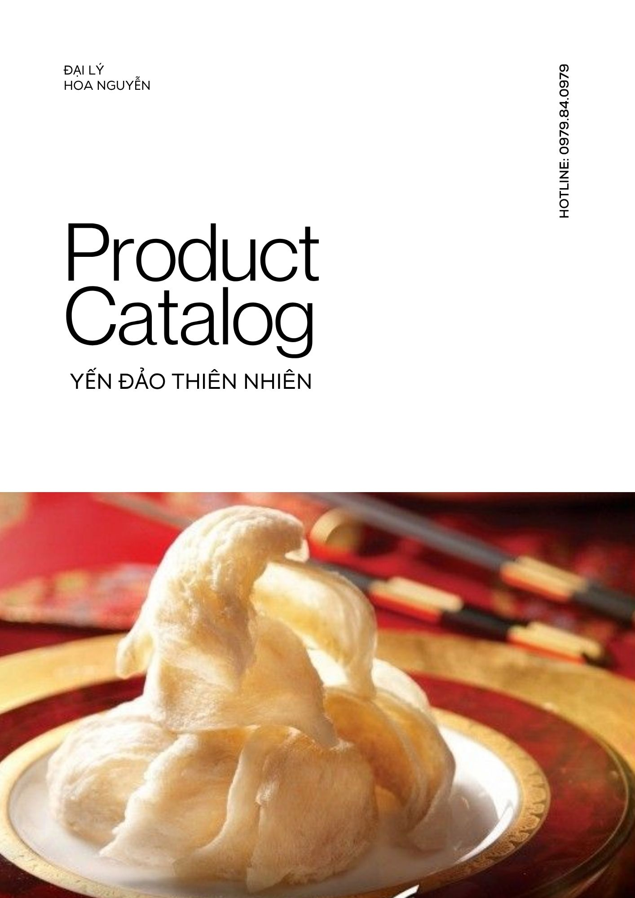
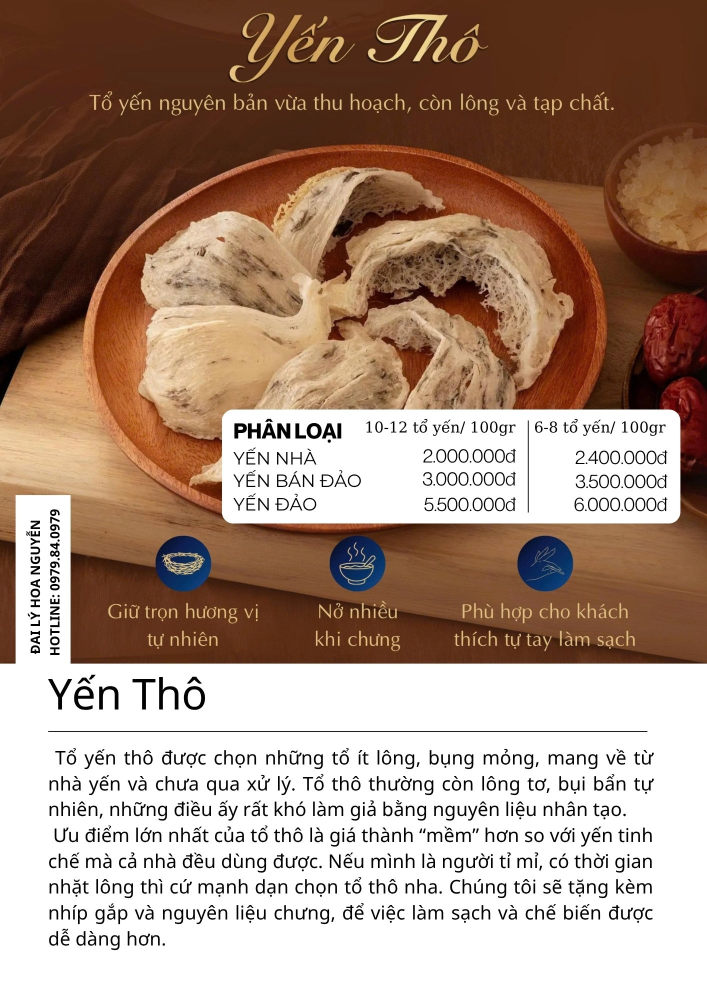
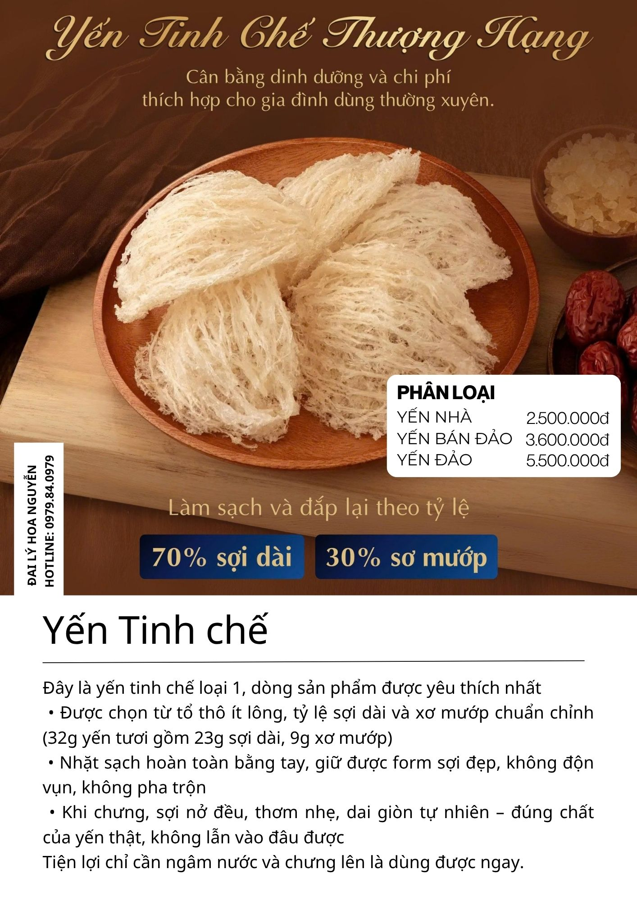
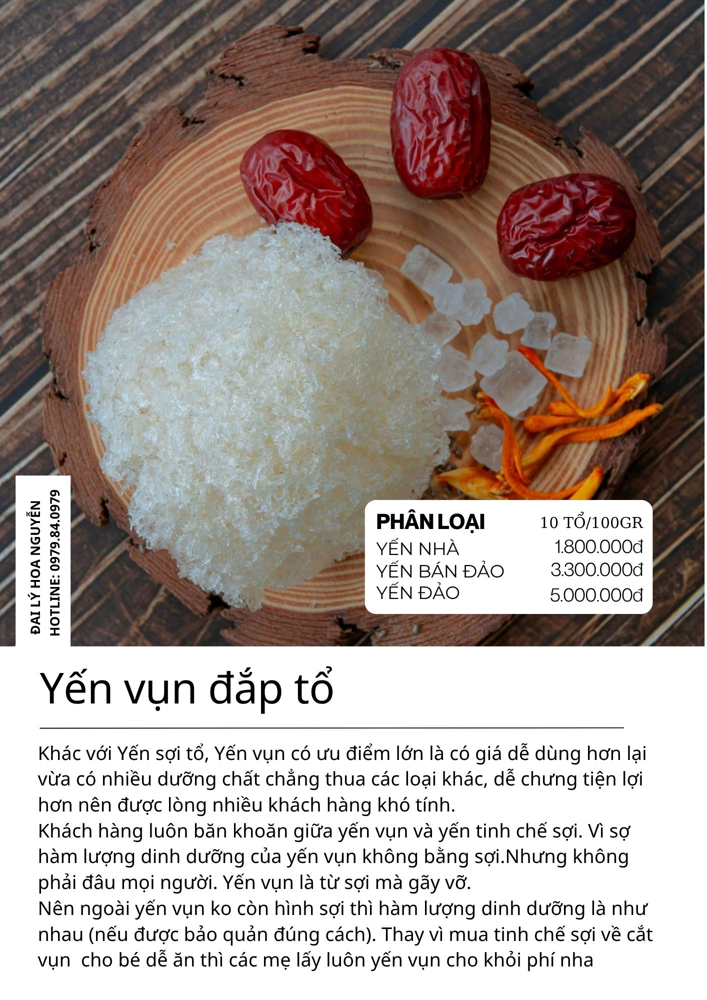
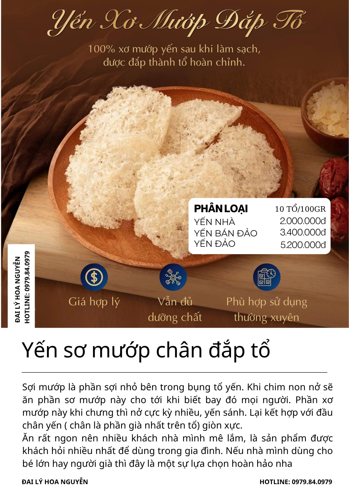
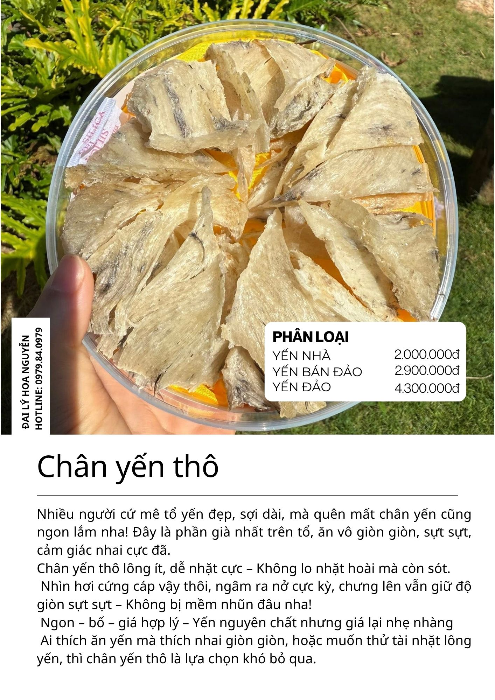
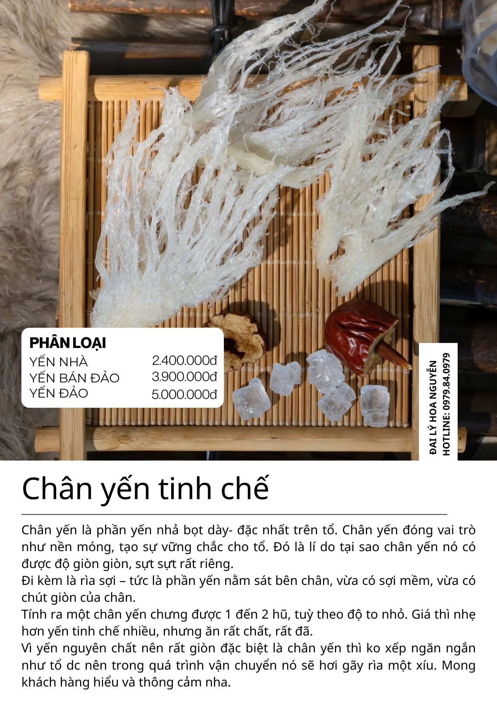
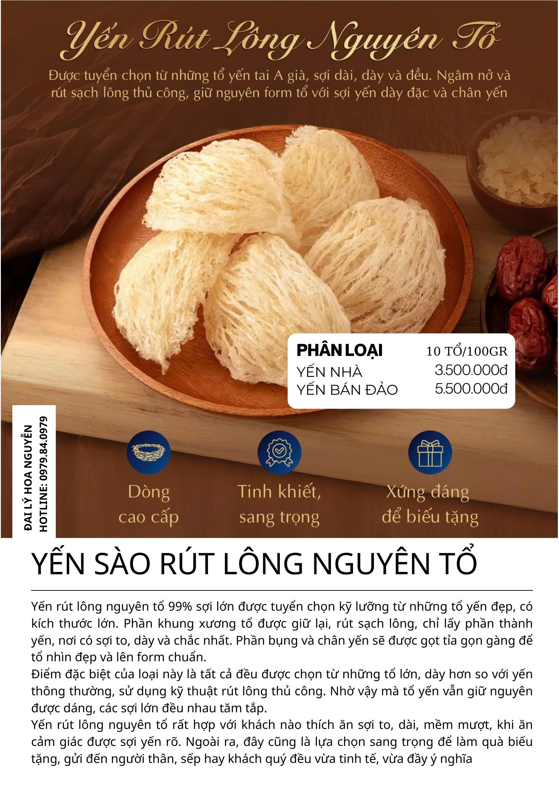
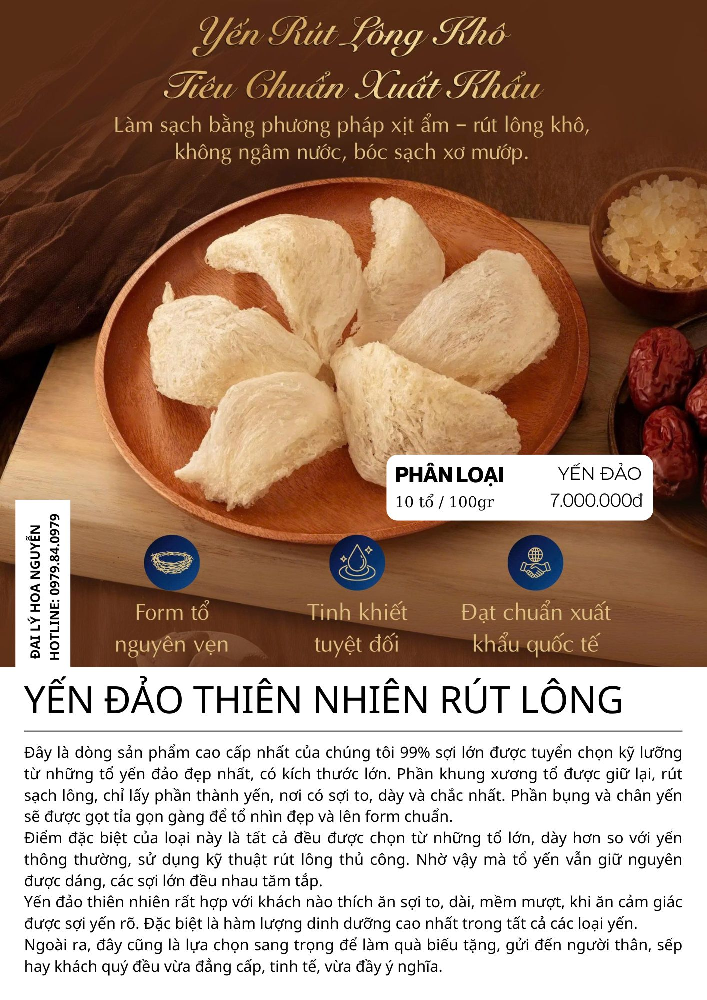

Chăm sóc sức khỏe gia đình bằng chén yến dinh dưỡng tự nhiên — nguồn gốc Khánh Hòa, đậm vị biển cả, hậu tươi khoáng.

Về Chúng Tôi
"Gửi gắm sự an tâm trong từng tổ yến"
Đại Lý Hoa Nguyễn với nguồn yến từ Khánh Hòa mang tới lựa chọn yến sào có dấu ấn biển đảo rõ rệt. Mỗi sản phẩm trước khi đến tay Khách Hàng đều được kiểm soát nghiêm ngặt — tuyển chọn đầu vào kỹ lưỡng, sơ chế thủ công tận tâm, quy trình an toàn minh bạch.
Chúng tôi tự hào mang đến chất lượng và trải nghiệm vị yến đúng nghĩa cho khách hàng — chén yến dinh dưỡng, đậm vị, hậu tươi khoáng với hơi thở biển cả.
Vì Sao Chọn Yến Bán Đảo?
Yến bán đảo & yến đảo tự nhiên từ Khánh Hòa vượt trội hơn yến nhà đất liền nhờ môi trường sống đặc biệt của đàn chim yến.
Vị trí đảo xa khu dân cư, gió biển giúp tổ khô "đúng nhịp", giữ dáng sợi đẹp. Không khói bụi, tiếng ồn.
Đàn yến kiếm mồi sát biển, nhiều côn trùng gió mang — tạo cảm nhận thanh, hậu khoáng đặc trưng.
Thu hoạch, làm sạch, đóng gói ngay tại đảo — hạn chế vận chuyển đường dài, giữ hương yến nguyên bản.
Bộ Sưu Tập
Mỗi hộp yến là một lời cam kết — chất lượng đo được, trải nghiệm đáng tin và sự an nhiên khi chăm sóc sức khỏe cho người thân.

Phổ BiếnTổ yến nguyên bản vừa thu hoạch
Tổ yến thô được chọn những tổ ít lông, bụng mỏng, mang về từ nhà yến và chưa qua xử lý. Giữ trọn hương vị tự nhiên, nở nhiều khi chưng.

Yêu Thích Nhất70% Sợi Dài — 30% Xơ Mướp
Yến tinh chế loại 1 — nhặt sạch hoàn toàn bằng tay, giữ form sợi đẹp, không độn vụn, không pha trộn. Khi chưng sợi nở đều, thơm nhẹ, dai giòn tự nhiên.

Giá TốtDễ dùng • Giá hợp lý • Dưỡng chất đầy đủ
Yến vụn là từ sợi mà gãy vỡ — giá dễ dùng hơn mà dưỡng chất chẳng thua kém. Phù hợp cho bé và người lớn tuổi, dễ chưng tiện lợi.

Gia Đình100% xơ mướp yến — đắp thành tổ hoàn chỉnh
Sợi mướp nở cực kỳ nhiều, yến sánh. Kết hợp với chân yến giòn xực. Sản phẩm được khách hàng yêu thích nhất để dùng trong gia đình.

Ngon BổPhần già nhất trên tổ — giòn sựt sựt
Chân yến thô lông ít, dễ nhặt — chưng lên vẫn giữ độ giòn sựt sựt. Ngon, bổ, giá hợp lý — Yến nguyên chất nhưng giá nhẹ nhàng.

Giòn giòn sựt sựt — đi kèm rìa sợi
Chân yến là phần yến nhả bọt dày nhất trên tổ. Đi kèm rìa sợi — vừa có sợi mềm, vừa giòn của chân. Giá nhẹ hơn yến tinh chế nhưng rất chất.

Cao CấpDòng cao cấp • Tinh khiết • Sang trọng
99% sợi lớn, tuyển chọn kỹ lưỡng từ những tổ yến đẹp nhất. Rút sạch lông thủ công, giữ nguyên form tổ — xứng đáng để biếu tặng.

Đỉnh CaoForm tổ nguyên vẹn • Tinh khiết tuyệt đối
Dòng sản phẩm cao cấp nhất — làm sạch bằng phương pháp xịt ẩm, rút lông khô, không ngâm nước, bóc sạch xơ mướp. Đạt chuẩn xuất khẩu quốc tế.
Nguồn Gốc Yến
Yến sào Khánh Hòa được khoa học thế giới công nhận là loại tổ có giàu chất dinh dưỡng nhất so với tổ yến các vùng và các nước lân cận.
Nhà yến được đặt trong đất liền Nha Trang. Với số lượng nhà yến nhiều nên giá thành dễ chịu, vẫn giữ được giá trị dinh dưỡng cơ bản của tổ yến.
Từ 1.800.000đ / 100grNhà yến đặt ngay trên đảo Trí Nguyên — giữ tính ổn định và tiện lợi nhưng cộng thêm lợi thế biển–đảo về không khí và nguồn thức ăn. Vị thanh, sợi mềm.
Từ 2.900.000đ / 100grTổ hình thành trong hang đảo — sợi săn chắc, vị đậm, hậu tươi khoáng. Hàm lượng khoáng vi lượng cao hơn nhờ điều kiện sống đặc thù. Chuẩn mực cho người sành.
Từ 4.300.000đ / 100grQuy Trình
Mỗi tổ yến đều trải qua quy trình kiểm soát chất lượng nghiêm ngặt từ thu hoạch đến đóng gói.
Thu hoạch tổ yến tại đảo Trí Nguyên, Khánh Hòa
Tuyển chọn kỹ lưỡng, phân hạng rõ ràng theo chất lượng
Nhặt lông thủ công, giữ form sợi đẹp, không pha trộn
Đạt tiêu chuẩn ATTP, hồ sơ truy xuất nguồn gốc
Bao bì sang trọng, sẵn sàng cho biếu tặng
Bảng So Sánh
Giúp Anh/Chị dễ dàng lựa chọn loại yến phù hợp với nhu cầu gia đình.
| Loại Yến | Kết Cấu | Hương Vị | Phù Hợp Với | Gợi Ý Sử Dụng |
|---|---|---|---|---|
| Yến Vụn | ★★★☆☆ Mềm–vừa | Thanh, nhẹ, dễ ăn | Trẻ nhỏ, người lớn tuổi, mới tập ăn | Ăn hằng ngày, chưng mềm |
| Yến Xơ Mướp | ★★★☆☆ Mềm–tơi | Thanh, tơi, ít ngậy | Trẻ nhỏ, người bận rộn | Chưng nhanh, sợi tơi nhẹ |
| Yến Nguyên Tổ | ★★★★☆ Sợi rõ | Đậm hơn, hậu rõ | Người trưởng thành, thích vị yến | Quà biếu sang trọng |
| Yến Rút Lông | ★★★★☆ Sợi tự nhiên | Thanh – sạch vị, nở đẹp | Mọi lứa tuổi, biếu tặng | Chưng giữ form tổ đẹp |
| Yến Tinh Chế | ★★★☆☆ Mềm–đều | Thanh, gọn vị, đồng đều | Gia đình dùng đều đặn | Nhanh gọn, tiết kiệm thời gian |
| Chân Yến | ★★★★★ Dai–giòn | Đậm, thơm, "đã miệng" | Người thích nhai giòn | Chưng lâu hơn để đạt dai vừa |
Khách Hàng Nói Gì
Liên Hệ Đặt Hàng
Nếu Anh/Chị cần tư vấn để chọn yến phù hợp — chúng tôi luôn sẵn lòng hỗ trợ chi tiết. Hãy liên hệ ngay hôm nay!
0979.84.0979